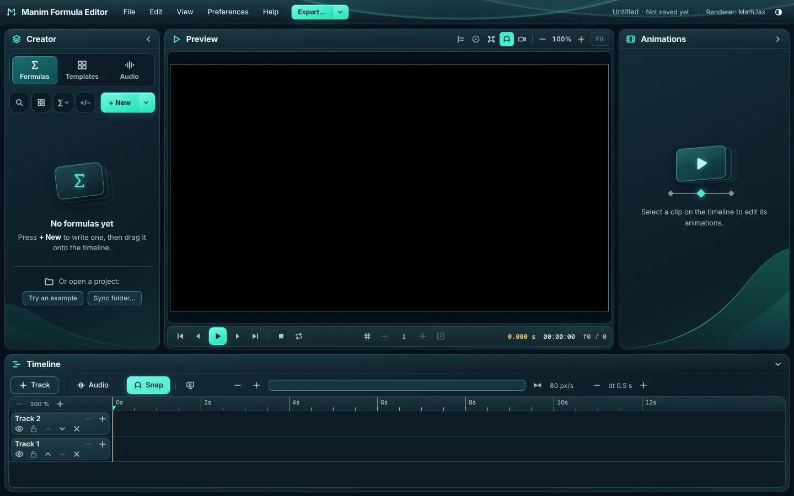
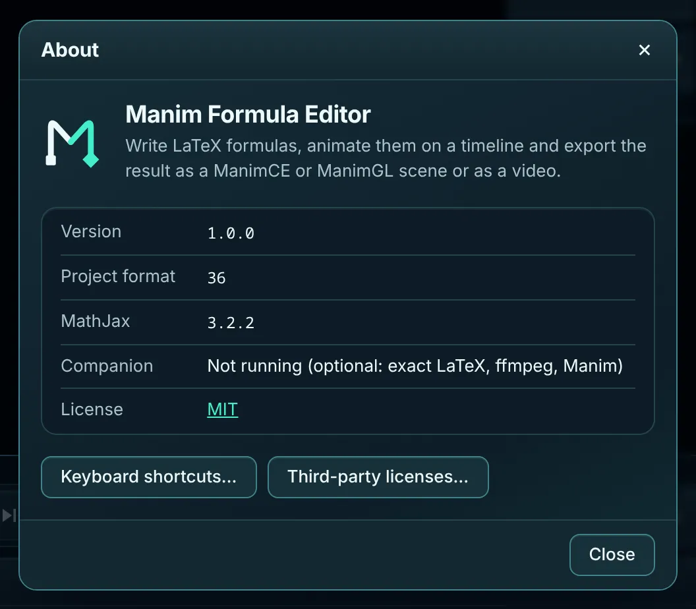
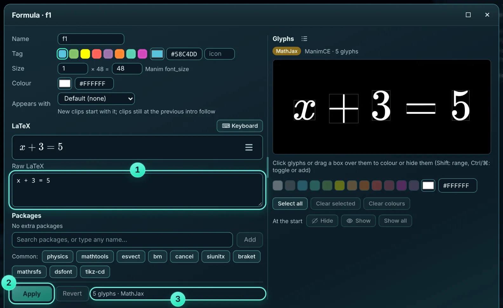
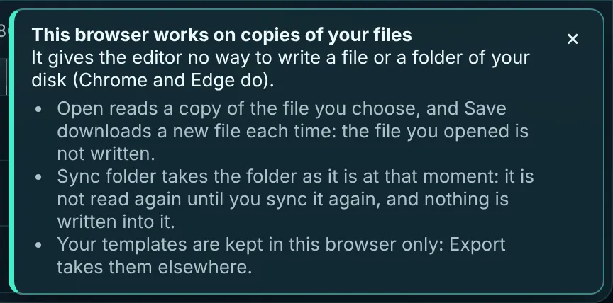
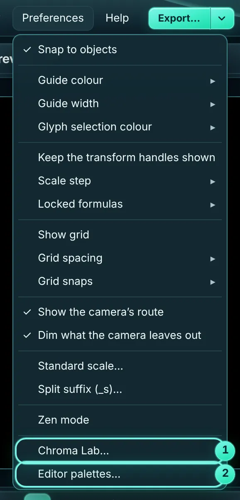
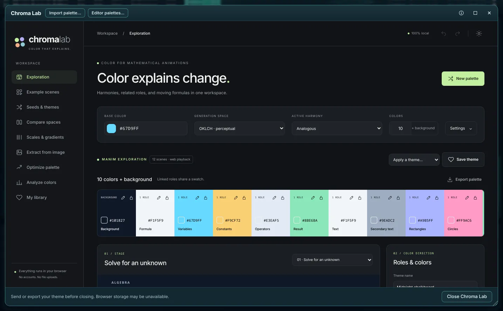

Getting the app running
The editor is a web app. Download it ready-built or build it once, then open its index.html from your disk: no server to run, no account to make. Everything else on this page is optional.
The ready-built app
The editor is published ready-built on the releases page of its repository: a ZIP of about 2.5 MB, manim-formula-editor-1.0.0.zip for this version. Unzip it anywhere and open the index.html of its folder in your browser. It is the editor a build makes (below), so you need neither Git nor Node.js for it.
The ZIP holds the editor alone, with Chroma Lab inside and the licences of what it contains. The companion is a file of the repository, companion/mfe_companion.py: take it from there when you want it.
What you need
To build the editor yourself and run it:
- Git, to copy the repository (or download its ZIP from the GitHub page).
- Node.js with npm: 22.22.2 or later in the 22 line, 24.15.0 or later in the 24 line, or any version from 26 on (the
enginesfield ofapp/package.json). - A browser. A recent Chrome or Edge gives the whole editor; see Browsers for what Firefox and Safari do differently.
You need no Manim to write, preview and play an animation, nor to export a video from the browser. Manim is for running the Python the editor exports (below).
The built app, from disk
Get the code, install what it depends on, and build it:
git clone https://github.com/zavden/mfe.git
cd mfe/app
npm install
npm run buildnpm run build type-checks the app and writes the finished editor into app/dist/. Open app/dist/index.html in your browser: double-click it, drag it onto a browser window, or ask the system to open it:
xdg-open dist/index.html # Linux
open dist/index.html # macOS
start dist\index.html # Windowsdist/ is the whole editor: one script, its stylesheet, its fonts, and Chroma Lab in dist/chroma-lab/. Its addresses are relative and it needs nothing from the internet, which is why it opens from disk. You can copy the folder wherever you like.
The first time, the editor shows an empty project: no formulas, two empty tracks, and in the Creator two buttons, Try an example, which opens a finished project to play and change (The examples), and Sync folder…, for the folder of your own projects.

The dev server
If you would rather not build, or you want to see changes to the app at once, run the development server from app/:
cd mfe/app
npm install # the first time
npm run devVite prints the address to open, http://localhost:5173/ unless that port is busy. It is the same editor. The difference that matters to you: a page served from localhost is one the companion accepts without any option, which a page opened from disk is not.
Three ways to open it
The editor is the same whichever way you open it. What changes is the address the page has, and that decides whether the companion accepts it.
| Way | You run | You open | The companion |
|---|---|---|---|
| The built app, from disk | npm run build, once | app/dist/index.html | Needs --allow-file-origin |
| The dev server | npm run dev | http://localhost:5173/ | Accepts it as it is |
| Served by the companion | mfe_companion.py serve --app app/dist | http://127.0.0.1:7799/app/ | Is the page's own origin: nothing to allow |
Check that it works
Open Help ▸ About. It names the editor's own version first (Version 1.0.0), then the version of the project format, the version of MathJax that draws the formulas, and whether a companion is running. Its Third-party licenses… button, which Help ▸ Third-party licenses… also opens, lists the open-source components the editor contains, with their versions and licences.


Browsers
The editor runs in the browser and draws its formulas there, so it needs nothing but the page. One thing differs between browsers: whether the page may open and write the files and folders of your disk. Chrome and Edge give it the File System Access API. Firefox and Safari do not.
| What you do | Chrome, Edge | Firefox, Safari |
|---|---|---|
| File ▸ Open…, then Other file… | Reads the file and remembers where it is. | Reads a copy of the file you choose. |
| File ▸ Save | Writes the same file. The first time, a picker asks where. | Downloads a new file each time; the file you opened is not written. |
| File ▸ Sync folder… | Keeps the folder and lists it again whenever the Projects dialog opens. A project opened from it saves in place, and Save As starts there. | Takes the folder as it is at that moment. It is not read again until you sync it again, and nothing is written into it. |
| Your templates | Kept in the browser, and also in the synced folder. | Kept in the browser only; Export takes them elsewhere. |
| Export ▸ Video… | The dialog asks where to save the file first, then writes it as it encodes. | The video is put together in memory and downloaded at the end. |
The editor decides by what the browser can do, not by its name. When the browser cannot write files or folders, the editor tells you once per session, as it opens, in a notice that stays until you close it:

Chroma Lab, inside the app
Chroma Lab is a colour studio for designing the palette of a scene: harmonies, roles for the parts of a formula, and contrast against the scene's background. It comes inside every build, as a copy kept in dist/chroma-lab/, and works offline. There is nothing to install.
Open it with Preferences ▸ Chroma Lab…. Editor palettes…, the entry after it, is where the palettes you keep are listed and edited.


Palettes and Chroma Lab shows how to design a palette and send it to the editor.
The optional companion
The companion is one Python file that you start yourself. The editor works without it: Without the companion says what you have then, and the one place where it shows in what you export. With it, the editor can get:
- exact glyphs: formulas compiled by real LaTeX, as Manim compiles them, so glyph order and shapes match Manim's;
- font text, shaped by Pango;
- fast video encoding with ffmpeg;
- rendering of the exported scene with your own Manim.
It needs Python 3.10 or later (and nothing to install for the file itself), and, for exact glyphs, latex and dvisvgm on your PATH. Start it from the repository's root:
python3 companion/mfe_companion.py serveThat gives exact glyphs, and encoding with ffmpeg where ffmpeg is installed. Font text also needs the Python of your Manim (--ce-python or --gl-python names it), and rendering with Manim needs --allow-manim-render as well.
The editor finds it by itself. Once formulas use it, the bar says Renderer: LaTeX (or mixed while some still use MathJax). If something is missing, ask the companion what this machine lacks and how to get it:
python3 companion/mfe_companion.py healthWhen you open the built editor from disk, the companion refuses the page unless you start it with --allow-file-origin. Or let the companion serve the editor itself, and open http://127.0.0.1:7799/app/:
python3 companion/mfe_companion.py serve --allow-file-origin
python3 companion/mfe_companion.py serve --app app/distWhich options turn on which features, and what each costs, is in The companion.
Manim, to run the Python
The editor exports a Python scene for ManimCE (the community edition, 0.22) or ManimGL (3Blue1Brown's, 1.7). To render that file you need the matching Manim, installed the way its own documentation says:
The first lines of every exported file give the command that renders it at the project's size and frame rate, for example manim -r 1920,1080 --fps 60 FirstTransform.py FirstTransform. The generated Python and ManimCE and ManimGL tell the rest.
Where to go next
- Your first animation takes you, step by step, from two formulas and a transformation between them to the export for Manim.
- A tour of the interface shows the menu bar and the four panels of the editor.
- The companion says how to start the optional helper, check it and use it safely.